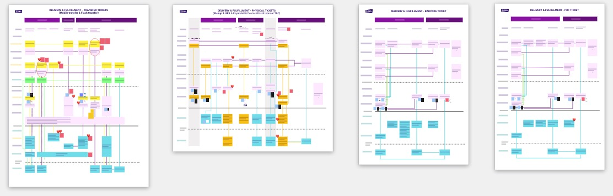

PRODUCT DESIGN INTERN
STUBHUB

Time - Fall 2020
Role - Product Design Intern
Colleagues - Design Managers, UX Designers, Product Managers, and various Developer Teams
During my 3 months at StubHub, I had the opportunity to wear multiple hats and work on different projects as an intern. The projects I worked on range from ticket delivery, system messaging, to designing internal tools.
Impact
Collaborating with my Design Manager and Product Managers, I produced 5 service blueprints that captured core problems within StubHub’s ticket delivery & fulfillment services. Then, I designed a new template system for StubHub that aims to solve some of the core problems discovered.
Problems on the Surface
The story begins with a meeting between the design team and a product manager(PM). In the meeting, the PM mentioned some ongoing problems in StubHub’s processes. Those problems were very general, like high amounts of Customer Support calls and delayed processes. I was given the task to dig down to the root of these problems and potentially, solve them.
Breaking Them Down
At first, these problems were so general that I found it difficult to navigate. Fortunately, my design mentor suggested a direction, specifically, a method, that I could use to get down to the causes of these problems - Service Blueprints .

By laying out StubHub’s core ticketing service, I thought it might be easier for me to pinpoint the stages at which the problems emerge.
StubHub is a large company with diverse teams. To create a service blueprint that covers the whole service line, I reached out to different teams and scheduled Q&A meetings to learn what each team was doing.
I also made smaller blueprints that specifically capture the delivery & fulfillment process of StubHub’s services. This time, I created a service blueprint for each of StubHub’s 4 core ticket media: mobile transfer tickets, physical tickets, PDF tickets, and Barcode tickets.
Root Problems
The smaller blueprints were able to capture the backend technical processes in much fuller details(Yes!). As I was analyzing these root causes, I could discover more refined problems underneath the general problems mentioend by our PM.

Narrowing It Down
Some of the problems listed above are technical problems, yet some reside in the user experience. To further narrow the scope down to actionable problems, I categorized the discovered problems into two categories:
Competitor Analysis
During a user's journey at StubHub, a lot of the frontstage interactions we have with our users are either directly through or triggered by emails. Therefore, to fix the core problems discovered from Blueprints, I decided to look for ways to improve StubHub's current emailing system.
Brainstorming Solutions
After analyzing how other e-commerce companies communicate with their users. I started to brainstorm potential improvements to StubHub's email system. To try to come up with the most effective solutions, I compared each idea against the problems of focus.
Critical Templates
After I presented my findings to the team, my next task was to improve StubHub’s current email system. To begin, I gathered 5 critical email templates based on StubHub’s data.

Information Architecture
By analyzing these emails, I identified some recurring elements that are present in most of the them -
To improve upon the current system, my goal was to iterate upon these existing elements while trying to give them a more modern look & feel.
Redesigned Prototypes

The redesigned prototypes have a look & feel that better illustrates StubHub's branding as a ticketing service platform. StubHub's core purple color makes this new email system consistent with StubHub's website and mobile apps.
Redesigned Elements - Event Info
One of the elements that is heavily redesigned in the new system is the section of event information.
The new design heavily uses imagery that creates a sense of excitement when users see StubHub's emails. Seeing the performer, even as a picture, will induce the feeling of actually seeing the performer in person. Also, the font sizes and layout were updated to adhere to StubHub's newest design guidelines.

Another important change is that the position of event information section in an email is moved up to the beginning part. This change in position is a possible solution to one of the core problems discovered in Service Blueprints - Forgetful Users.
By nature, StubHub's service cycle is long. As a seller, you might get your tickets sold months after you list them. As a buyer, your tickets might arrive a long time after you purchase them. Therefore, the when the users get emails like "upload your tickets on time" or "your tickets are arrived", It would take time for them to realize which concert the emails are about.
Moving the event information section to the beginning of the email, users will instantly realize the subject event of the emails received and remember which stage they are at with the tickets.
Other Elements
Several other elements in the original templates were redesigned to keep up with StubHub's newest brand voice.
This is an ongoing project. Feel free to reach out to me for the lastest updates! :)
Expectations
During COVID, it is relatively hard to actually conduct usability tests on my redesign proposals. However, I still set metrics to determine whether the new email templates are effective, if I have the chance to test it in the future.
Things I Learned
The biggest takeaway from this project was the experience of conducting user research on a company’s technical processes. When a company becomes large, responsibilities are distributed into many smaller branches, which can loosen the connections in-between processes. The “user research” I did for this project was novel, as my users were different development teams. Aside from learning about the technical processes underlying the user experience, I gained a better understanding on how products and services at large-scale companies operate as a whole.